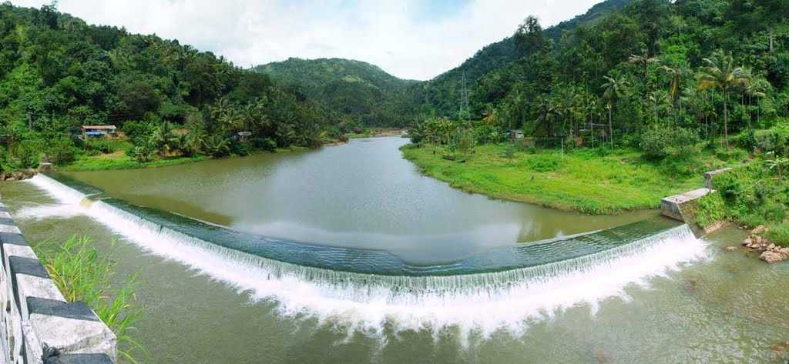

Periyar National Park
Periyar National Park is a wildlife sanctuary located in the Western Ghats mountain range of Kerala, India. The park is named after the Periyar River, which flows through it. The park was established in 1950 and in 1978 it was also declared a tiger reserve under the Project Tiger initiative launched by the Government of India.
Malankara Dam

Malankara dam is a gravity dam constructed across Thodupuzha river for irrigation purposes. The dam is constructed to make use of the tail water from the Moolamattom power house. The project is run under the Muvattupuzha Valley Irrigation Project and KSEB. The artificial lake covers an area of around 11 square km.